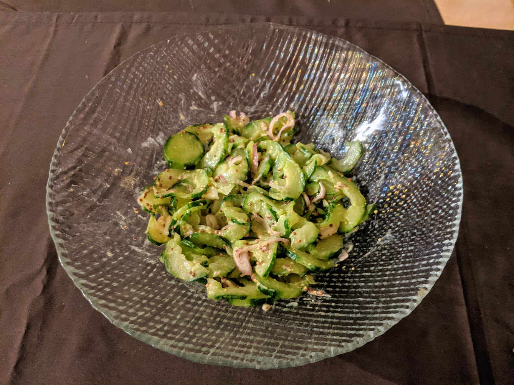

Salade de concombres

Pour 2-3 personnes :
- Un concombre
- Un petit oignon, ou une échalote, ou deux oignons frais
- Deux bonnes cuillères à soupe de moutarde
- Deux cuillères à soupe d'huile
- Sel, poivre
- Éplucher le concombre. Enlever les pépins au milieu, le couper en tranches pas trop grosses, et disposer les tranches sur une feuille de papier absorbant. Saler, recouvrir d'une autre feuille de papier absorbant, et laisser dégorger pendant au moins une heure.
- Pendant ce temps, éplucher et couper l'oignon en lamelles fines. Le mettre au fond d'un saladier, ajouter la moutarde, l'huile d'olive, poivrer, mélanger, et laisser mariner.
- Prendre le concombre poignée par poignée, et le presser entre ses mains bien fort pour enlever un maximum d'eau. C'est normal si les tranches perdent de leur intégrité durant le processus. Mettre les concombres pressés dans le saladier, mélanger, déguster immédiatement (ou bien plus tard, ça se garde au frais jusqu'au lendemain).
Retour à la liste des recettes